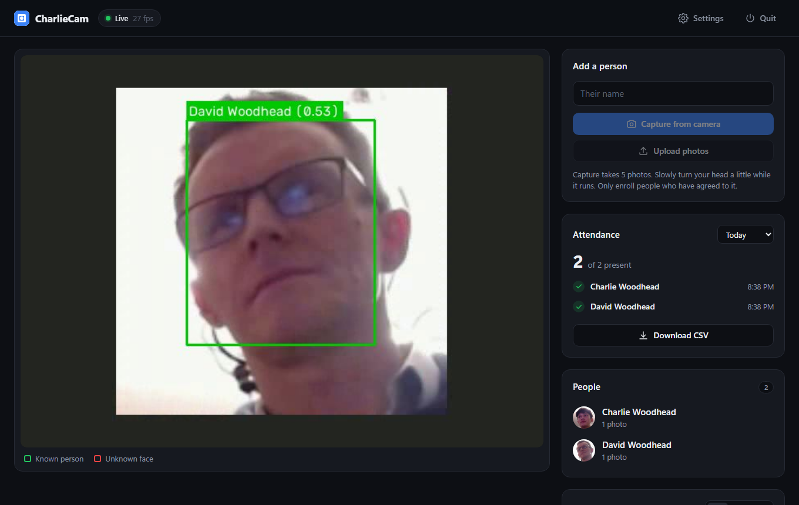

The browser app: live view, add-a-person, today's attendance and the people list.
What it does
- Live recognition. A green box and name for members, and a red "Unknown #N" for anyone else, at about 30 fps on a laptop CPU.
- Instant enrollment. Upload photos, or click Capture and it takes 5 good shots automatically, only when exactly one face is in view.
- Attendance. Who is here, when they arrived and who is still missing, for any past meeting, with a CSV export.
- Runs anywhere. Webcam, RTSP camera or recorded video, through a browser app, a desktop app or a CLI. Unknown faces are saved for review.
1 photo
is enough to enroll a member; no retraining
~30 fps
detect + recognise on a CPU, 640×480
78→99.5%
walking-past frames named, tracker off → on*
112
automated tests; CI on Windows + Linux
0
cloud calls; faces never leave the PC
The pipeline: from walking past to the attendance record
1 · CAPTURE
Camera thread
Always keeps the newest frame, so a slow step never builds lag.
2 · DETECT
YuNet CNN
Finds faces plus 5 landmarks. Faces under 40 px are skipped.
3 · EMBED
SFace
Aligns on the landmarks, then turns the face into a 128-d vector.
4 · MATCH
Cosine similarity
One NumPy matrix product against every stored vector, with a threshold of 0.363.
5 · TRACK
Identity tracker
Keeps the name through blurry frames as the person moves.
6 · RECORD
Event log → attendance
One entry per person per 10 s. Attendance is computed from the log.
Clever approaches
- Open-set matching, not a classifier. It can say "none of the above", and a new member is one more vector. That is why the live upload demo works immediately.
- A motion-aware hold. A face too blurred to match keeps the name of a person matched under 1 s ago in the same spot (by box overlap). The hold never extends itself, so a stranger can't inherit a name.
- One source of truth. An append-only JSON-lines log. Attendance for any day is computed from it, so the two can never disagree.
- Testable without a camera. The detector and embedder sit behind interfaces. In tests a "face" is a coloured square whose colour is its embedding, so every layer is deterministic.
- Safe by default. Localhost only, cross-site requests blocked, atomic writes, stable IDs plus a cooldown so one visitor makes one alert, and biometric data git-ignored.
Built on open source
| OpenCV | DNN runtime, capture, drawing | Apache-2.0 |
| YuNet | Face detector + landmarks (OpenCV Zoo) | MIT |
| SFace | Face embeddings (OpenCV Zoo) | Apache-2.0 |
| NumPy | Vectorised cosine matching | BSD-3 |
| FastAPI | JSON API + MJPEG video stream | MIT |
| Uvicorn | Local web server | BSD-3 |
| Pillow | Desktop app rendering | MIT-CMU |
| pytest · Ruff | Tests + lint in GitHub Actions | MIT |
Trade-offs: no liveness check (a printed photo can match), and side profiles aren't recognised. Mount the camera at the door at face height, facing people as they walk in.